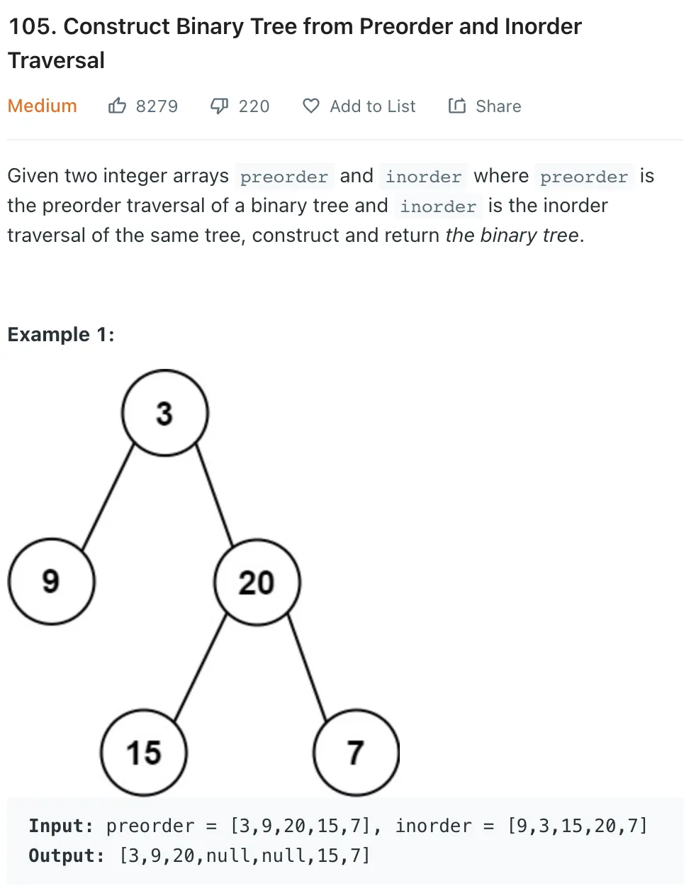
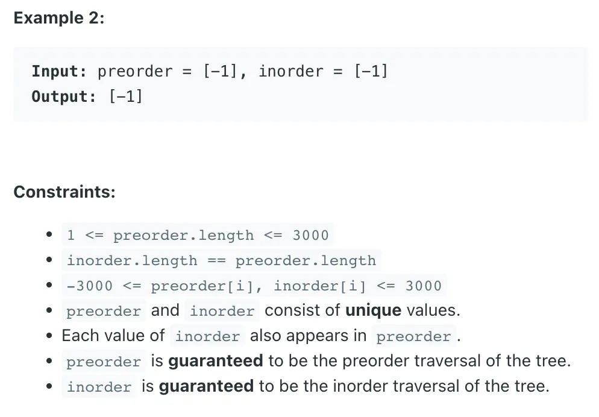

105. Construct Binary Tree from Preorder and Inorder Traversal
Question


先自己想想看 🤔Try it yourself first 🤔
✍🏽 My Solution
Runtime: 3 ms, faster than 81.51% of Java online submissions for Construct Binary Tree from Preorder and Inorder Traversal.
Memory Usage: 44.6 MB, less than 33.22% of Java online submissions for Construct Binary Tree from Preorder and Inorder Traversal.
class Solution {
int preOrderIndex = 0;
HashMap<Integer, Integer> inorderMap = new HashMap<>();
public TreeNode buildTree(int[] preorder, int[] inorder) {
int n = inorder.length;
for (int i = 0; i < n; i++) {
inorderMap.put(inorder[i], i);
}
return buildTreeHelper(preorder, inorder, 0, n-1);
}
private TreeNode buildTreeHelper(int[] preorder, int[] inorder, int start, int end) {
if (start > end) return null;
TreeNode root = new TreeNode(preorder[preOrderIndex++]); // 根節點
int rootIdx = inorderMap.get(root.val); // 中序遍歷數組根節點的下標位置
root.left = buildTreeHelper(preorder, inorder, start, rootIdx - 1);
root.right = buildTreeHelper(preorder, inorder, rootIdx + 1, end);
return root;
}
}
🧠 Thought Process
- Why did I choose this particular implementation?
- 參考古城算法
- What is the time/space complexity of my solution? How do I know?
- time: O(n)
- space: O(n)
- What mistakes did I make?
- 會忘了n-1!!!!!!!!!!!
- HashMap忘了要key value形式
Solution #3 [古城算法-HashMap]
Runtime: 3 ms, faster than 81.51% of Java online submissions for Construct Binary Tree from Preorder and Inorder Traversal.
Memory Usage: 44.8 MB, less than 27.97% of Java online submissions for Construct Binary Tree from Preorder and Inorder Traversal.
class Solution {
int preOrderIndex = 0;
HashMap<Integer, Integer> inorderMap = new HashMap<>();
public TreeNode buildTree(int[] preorder, int[] inorder) {
int n = preorder.length;
for (int i = 0; i < n; i++) {
inorderMap.put(inorder[i], i);
}
return helperbuild(preorder, inorder, 0, n - 1);
}
private TreeNode helperbuild(int[] preorder, int[] inorder, int inStart, int inEnd) {
if (inStart > inEnd) return null;
TreeNode root = new TreeNode(preorder[preOrderIndex++]);
int inorderIdx = inorderMap.get(root.val);
root.left = helperbuild(preorder, inorder, inStart, inorderIdx - 1);
root.right = helperbuild(preorder, inorder, inorderIdx + 1, inEnd);
return root;
}
}
Explanation (in my words)
-
How does their solution work?
-
假設輸入是這樣
preorder: [1, 2, 4, 5, 3, 6] inorder: [4, 2, 5, 1, 6, 3]
-
- 根據
preorder找到根節點是1
- 根據
-
- 根據根節點將
inorder分割成左子樹[4, 2, 5]和右子樹[6, 3]
- 根據根節點將
-
- 將其餘部分拆分為與
preorderinorder[2, 4, 5][3, 6]
- 將其餘部分拆分為與
- 用一个
HashMap把中序遍历数组的每个元素的值和下标存起来，这样尋找根节点的位置就可以直接得到了。 - 從
HashMap中尋找在inorder中根節點的下標位置，存到preOrderIndex
Solution #2 [StefanPochmann-Simple O(n) without map]
-
Runtime: 1 ms, faster than 99.81% of Java online submissions for Construct Binary Tree from Preorder and Inorder Traversal.
Memory Usage: 44.8 MB, less than 23.34% of Java online submissions for Construct Binary Tree from Preorder and Inorder Traversal.
class Solution {
private int in = 0;
private int pre = 0;
public TreeNode buildTree(int[] preorder, int[] inorder) {
return build(preorder, inorder, Integer.MIN_VALUE);
}
private TreeNode build(int[] preorder, int[] inorder, int stop) {
if (pre == preorder.length) return null; // pre走到preorder末尾
if (inorder[in] == stop) { // in指针走到了停止点
in++; // stop点废弃了，in推进一位
return null;
}
TreeNode node = new TreeNode(preorder[pre++]);
node.left = build(preorder, inorder, node.val);
// 左子树的停止点是当前的根节点的值
node.right = build(preorder, inorder, stop);
// 右子树的停止点是当前树的停止点
return node;
}
}
Explanation (in my words)
- How does their solution work?
- 没有每次都在 inorder 数组中找根节点，也没有用 哈希表 存 inorder 每一项。
- 变量 pre 保存当前要构造的树的 root 变量 in 保存 inorder 数组中可以成为 root 的数字们的开头那个 对于当前要构造的树，有一个停止点 stop ，inorder 数组中第 in 项到第 stop 项是要构造的树的节点值们 每次递归调用，都会确定出一个停止点，它告诉了子调用在哪里停止，把自己的根节点值作为左子树调用的停止点，自己的（父调用给下来的）停止点作为右子树的停止点
Solution #1 [王爭]
class Solution {
public TreeNode buildTree(int[] preorder, int[] inorder) {
return myBuildTree(preorder, 0, preorder.length-1, inorder, 0, inorder.length-1);
}
// preorder[i,j] inorder[p,r] 類比快速、歸併排序
private TreeNode myBuildTree(int[] preorder, int i, int j, int[] inorder, int p , int r) {
if (i > j) return null;
// 前序遍歷的i就是根節點
TreeNode root = new TreeNode(preorder[i]);
// 在中序遍歷結果inorder中，查詢preorder[i]所在的位置[p, split-1]split[split+1, q]
int q = p;
while (q <= r && inorder[q] != preorder[i]) {
q++;
}
int leftTreeSize = q-p; // 左右子樹大小
// 構建左子樹
TreeNode leftNode = myBuildTree(preorder, i+1, i+leftTreeSize, inorder, p, q-1);
// 構建右子樹
TreeNode rightNode = myBuildTree(preorder, i+leftTreeSize+1, j, inorder, q+1, r);
// 根據root、左子樹、右子樹構建樹
root.left = leftNode;
root.right = rightNode;
return root;
}
}
Explanation (in my words)
- How does their solution work?
-
遇到二叉樹問題，要想到遞歸來解決
子問題：（就可以構造出整棵樹）root.left = left root; root.right = right root;
- 左子樹的前中序遍歷結果 ⇒ 左子樹 left root
- 右子樹的前中序遍歷結果 ⇒ 右子樹 right root
- 遍歷中序遍歷結果數組，找到root節點，左邊就是左子樹，右邊就是右子樹
-